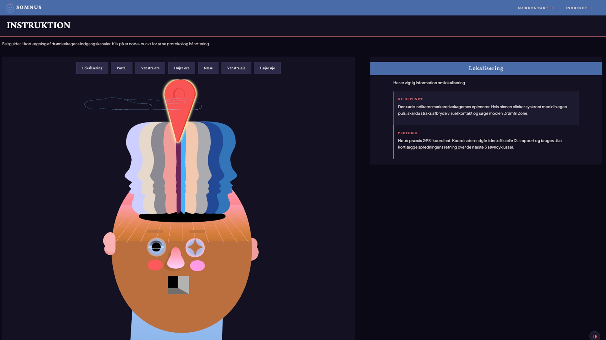
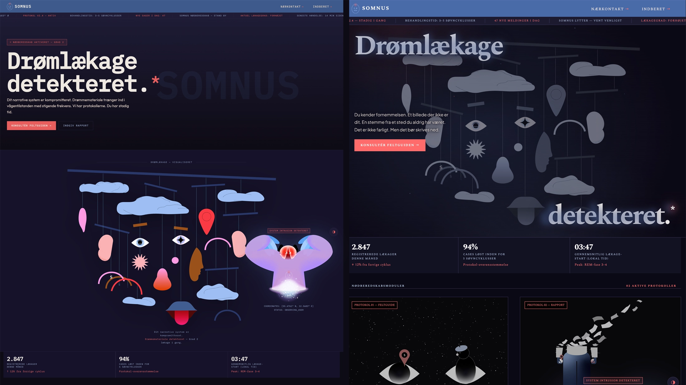

Brugergrænsefladeudvikling — SOMNUS — et interaktivt myndighedssite om Drømlækagen
"SOMNUS er designet til at føle sig som en portal ind i en historie. Nødsituationen er fiktiv, men interfacet skal få dig til at tro, at det er virkeligt."
SOMNUS er mit bud på et interaktivt myndighedssite, hvor grænsen mellem information og fortælling bliver udvisket. Udgangspunktet er en fiktiv krise — en såkaldt Drømlækage, hvor drømme og virkelighed overlapper. Sitets rolle er at formidle situationen som en officiel instans, samtidig med at brugerens oplevelse langsomt bliver mere usikker og “glitchy”.
Jeg arbejdede med at skabe en samlet visuel identitet og et interface, der både føles funktionelt og urovækkende. Resultatet er et lille univers, hvor design, interaktion og fortælling smelter sammen.
Fire uger — fire delopgaver
Opgaven tog udgangspunkt i et udleveret emergency site, som jeg skulle videreudvikle og transformere til mit eget fiktive univers. Jeg valgte at arbejde med idéen om en myndighed, der forsøger at håndtere en krise, som den ikke helt forstår — en “Drømlækage”.
Projektet var opdelt i fire uger, hvor jeg gradvist byggede sitet op:
- Udvikling af interaktiv infografik i Illustrator og JavaScript
- Design og kodning af webformular til symptomregistrering
- Opbygning af en forsidestruktur med visuel identitet og dynamisk statusflow
- Udvikling af mono mode som alternativt visuelt lag
Koncept → identitet → kode
Jeg startede med at definere SOMNUS som et system og ikke bare et website. Jeg arbejdede med idéen om en myndighed, der kommunikerer under pres, og som gradvist føles mere usikker i sin måde at formidle information på.
Det betød, at jeg hele tiden arbejdede i spændingsfeltet mellem funktion og fortælling.
- IBM Plex Mono valgte jeg for at understrege det systemiske og tekniske udtryk
- Farverne blev bevidst holdt kølige og advarselsprægede for at skabe en latent uro
- Infografikken blev bygget som et hybrid-element mellem illustration og interface
- Jeg arbejdede med interaktioner, der ikke bare forklarer — men afslører information gradvist
- Formularen blev designet som en “rolig flade” midt i kaosset
Til mono mode valgte jeg bevidst ikke et klassisk dark/light switch. I stedet skifter sitet til gråtoner — monokromt — for at bevare SOMNUS-universets alvor uden at bryde illusionen med et lyst og venligt interface.

SOMNUS — tre sider, ét univers
SOMNUS endte som et lille sammenhængende univers bestående af tre sider, hvor brugeren bevæger sig gennem information, system og registrering. Målet var at få det til at føles som én samlet myndighedsoplevelse.
- Forsiden fungerer som en levende statusflade med konstant bevægelse og signaler
- Infografikken giver brugeren mulighed for at “afkode” krisen gennem interaktion
- Registreringssiden bryder tempoet og skaber en mere kontrolleret, struktureret oplevelse
- Mono mode tilføjer et alternativt visuelt lag, der ændrer stemningen uden at bryde universet
Efter peer feedback blev kontrast og læsbarhed forbedret: IBM Plex Mono fik bedre font-weights og letter-spacing, og alle tekstelementer møder nu WCAG AA-kravene (4.5:1 for normal tekst, 3:1 for stor tekst). Mono mode fik desuden en skarpere gråtoneskala.

Læring
Jeg brugte mest tid på det visuelle arbejde i Illustrator, fordi det var her, jeg havde størst kontrol over udtrykket. JavaScript-delen blev mere et funktionelt lag, hvor jeg fik hjælp undervejs til at få interaktionen til at fungere.
Efter feedback justerede jeg typografi, farver og forsiden, fordi udtrykket var blevet for intenst og gjorde sitet mindre let at aflæse.
- Illustration og visuel opbygning kræver mest iteration i starten
- Interaktion skal støtte indholdet, ikke dominere det
- Feedback er afgørende for at justere visuel balance
Jeg lærte, at et stærkt visuelt udtryk skal justeres, så det ikke går ud over læsbarhed og balance i interfacet.